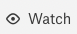

Work with Glossaries¶
Alation Cloud Service Applies to Alation Cloud Service instances of Alation
Customer Managed Applies to customer-managed instances of Alation
Alation Glossaries are built from glossary terms. Each glossary term has a specific term type template. You use glossaries to document business concepts: you can start by creating new glossary terms with their definitions.
Note
Before Alation release 2022.2, glossaries were created by associating articles using a particular template. This type of association is now called an article group. If you created glossaries using articles, you can migrate those articles to glossary terms using the Bulk Utility. See Migrate Articles to Glossary Terms.
As you work with glossaries, keep the following in mind:
Glossaries can be created only by Catalog Admins or Server Admins.
A glossary title, description, and templates can be edited only by Catalog Admins or Server Admins. This includes restoring values from history.
A glossary can be deleted only by Catalog Admins or Server Admins.
In the Glossary terms table, users can see only those terms that they have permission to view.
If a user does not have permission to see a custom field value, the field value is shown as Not Set.
Open the Glossary Hub¶
The Glossary Hub is a one-stop destination to view all your glossaries and glossary terms in a single place. To launch the Glossary Hub from the Apps menu, click Glossaries.
Add a Glossary¶
You need the role of the Catalog or Server Admin to be able to create glossaries.
To add a glossary:
On the Glossary Hub page, click Create Glossary in the upper right corner of the page. The Untitled Glossary page opens:
Add a Title and, optionally, a Description.
Click Add Term to add terms to the glossary. See Create Terms for more details.
Create Terms¶
To add a glossary term:
On the Glossaries page, click Create Term. The Untitled Term page opens:
Add a Title and, optionally, a description or definition.
Under Type, choose a term type from the dropdown list. If necessary, add an appropriate term type template.
Associate a Glossary Term with a Glossary¶
To associate a glossary term with a particular glossary:
On the Glossaries page, click the name of the desired glossary, such as Finance Glossary in the screenshot below:
On the glossary page that opens, click Add Term in the upper right corner of the page.
Select the desired term from the list of terms that appears:
Alternatively, you can associate a term with a glossary as follows:
On the Glossaries page, find the term you want to associate with the glossary, click the three-dot icon to the right of the term’s description, and then click Glossary Membership. The Add/Remove Glossaries dialog appears:
Select the glossaries you would like to associate with the glossary term, and then click Save.
Remove a Term from a Glossary¶
To remove a term from a glossary:
Open the glossary page.
Find the term you want to remove in the terms table.
Click the three-dot icon to the right of the term’s description, and then click Remove from Glossary.
Create Terms under a Workflow¶
To add a glossary term when a workflow is applied to glossary term creation:
Open the Glossary Hub and click Create Term. The Create Term with Glossaries membership dialog opens:
Select the glossaries you want the term applied to, and click Save.
If you know ahead of time that you will select only one glossary, you can skip this dialog by going directly to the desired glossary and clicking the Create Term button there.
The Untitled Term page opens:
The top of the page indicates that this term is a Draft pending submission. The bottom of the page contains a button labeled Submit for review.
Add a Title and, optionally, a description or definition.
Under Type, choose a term type from the dropdown list. If necessary, add an appropriate term type template.
When you are satisfied with the glossary term, click Submit for review.
The top of the page now reads Under Review and the button at the bottom changes to View Review Status.
Click View Review Status to see the current status of the review. Click Status to see the approval path information.
Review a Glossary Term¶
If you are a designated reviewer, you will receive an email notification whenever a new term is submitted for review. Glossaries that have terms under review will have an Under Review tab listing the terms needing review:
Click on a term to open the review.
The term under review appears somewhat differently from how it appears for the author. The top of the page says Under Review, as it does for the author, but the button at the bottom reads Approve or Reject.
To approve or reject the glossary term:
Click Approve or Reject. The Approve Membership page appears.
Click Approve to approve the term; click Reject to reject the term.
Click Save & Close.
Work with the Glossary Terms Table¶
You can filter the glossary terms table and add, remove, and rearrange the columns. By default, the glossary terms table shows the term titles, descriptions, and term types, along with the glossaries the term is a member of.
Filter¶
To filter the table, start typing in the Filter table field. The content will update to display only the terms for which any custom field value matches the text you entered.
Sort¶
By default, the terms in a glossary are sorted alphanumerically by title. You can reverse the sort order by clicking Term.
Add, Remove, and Rearrange Columns¶
You need the role of the Catalog or Server Admin to add, remove, or rearrange columns of the terms table.
To add, remove or rearrange the columns, click the  icon to open the Column Organization menu:
icon to open the Column Organization menu:
To add a column, select the corresponding checkbox in the list. This list is formed from all the custom and built-in fields in the available Term Type templates. A maximum of 20 columns can be added to the table.
Important
If a user does not have permission to view the values of a specific field on a specific term, they will appear as Not Set to this user.
To remove a column, clear the corresponding checkbox. The Title column cannot be removed.
To change the order of the columns in the table, hover over the field name to reveal the move icon:

Click it and drag and drop the field onto a new place in the list.
To reset the order back to the order in the column list, click Reset.
Click the Column Organization icon to close the menu:
Save Your Table View for Everyone¶
You can save your terms table view of a glossary for everyone in Alation. To make your view default, click Save View in the Save View for Everyone banner above the terms table.
Save View for Everyone:
Modify Glossary Settings¶
To change glossary settings:
Open the glossary you want to change.
To edit the title, hover over the title then click the pencil icon that appears.
To edit the description, click the Edit button.
To modify the columns in the terms table, see Add, Remove, and Rearrange Columns.
Save any changes.
Delete a Glossary¶
To delete a glossary:
On the glossary page, click Manage in the upper-right corner of the glossary page:
In the menu that appears, click Delete Glossary:
In the confirmation dialog that opens, confirm you want to delete the glossary.
Deleting a glossary does not delete terms associated with it.
Watching, Starring, and Conversations¶
You can watch and/or star a glossary and start a conversation from the glossary page.
Starring and Watching¶
To star a glossary, click the star icon on the upper right of the glossary page:

Starring a glossary adds it to the list of your favorites in Alation. To remove the glossary from your favorites list, click the star again. An orange star means the object is currently in the favorites list, while gray means starring is not applied.
To watch a glossary, click the watch icon on the upper right of the glossary page:
Watching signs you up for email notifications. You will get notified whenever another user makes a change to the glossary. To stop watching, click the watch icon again. Orange means watching is toggled on, while the gray watch icon means it is off.
Starring and watching Alation objects makes them easy to find and navigate to in Alation. You can quickly find the list of objects you have starred or are watching or by clicking the star or watch icons in the Filters area of the full-text search.
Finding Favorites and Watched Objects:

Start a Conversation¶
To start a conversation, click the conversations icon on the right:

To learn more about Conversations, see Conversations.